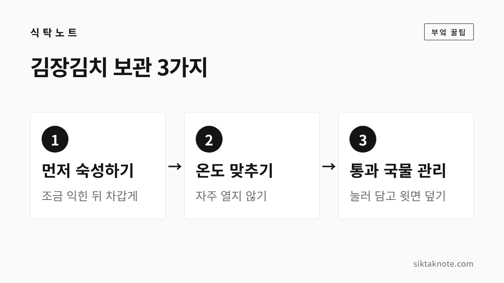
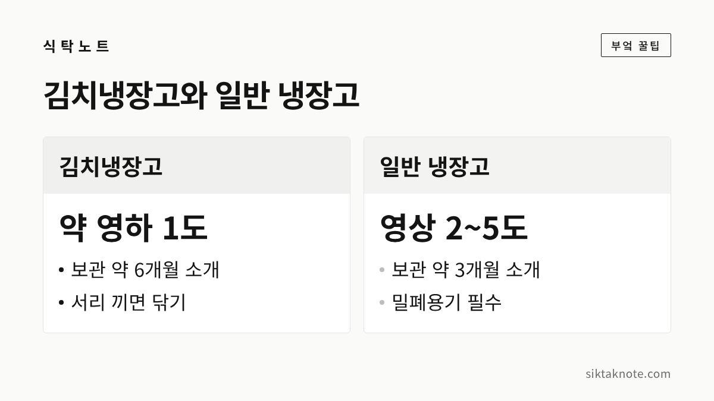

김장김치 보관법 3가지, 겨우내 맛있게 먹는 방법

3줄 요약
- 담근 김치는 처음에 조금 익힌 뒤 차가운 곳으로 옮기고, 이후에는 낮은 온도를 꾸준히 유지하는 것이 좋습니다.
- 김치냉장고는 약 영하 1도, 일반 냉장고는 영상 2~5도를 유지하라는 안내가 있고, 보관 기간은 각각 약 6개월과 3개월로 소개돼요.
- 밀폐용기에 국물이 잠기게 눌러 담고 윗면을 덮은 뒤, 자주 열지 않도록 작은 통에 나눠 두세요.
김장을 마치고 나면 이제부터는 이 김치를 봄까지 어떻게 맛있게 먹을까 하는 고민이 시작되는데요. 같은 김치라도 담근 뒤 처음 며칠을 어디서 보내는지, 어떤 온도와 통에 두는지에 따라 맛이 꽤 달라지거든요. 오늘은 처음 숙성, 냉장 온도, 통과 국물 관리 이렇게 세 가지만 기억하시면 됩니다.
먼저 알아 둘 것
이 글은 한국식품영양과학회지에 실린 2012년 연구 초록, 세계김치연구소 연구자의 설명을 담은 2021년 주간경향 기사, 농촌진흥청 자료를 인용한 2018년 정책브리핑 기사, 2014년 세계일보 기사와 식약처 안내를 전한 2026년 보도를 바탕으로 썼습니다. 농촌진흥청과 식약처 누리집은 이번에 직접 열어 보지 못했고, 기사와 논문 초록으로 확인한 내용이에요.
김치마다 양념과 젓갈, 담근 날씨와 냉장고 성능이 달라서 아래 수치는 정답이 아니라 시작점으로 봐 주세요.


1. 담근 직후엔 조금 익힌 뒤 차갑게
김장김치를 바로 차가운 곳에 넣어야 하는지, 먼저 익혀야 하는지 헷갈리시죠. 김치냉장고에서 6개월간 저장한 김장김치를 비교한 2012년 연구가 하나 있습니다. 네 가지 조건을 나눠 살폈는데요.
- 10℃에서 5일 숙성한 뒤 영하 2.5℃에 저장
- 15℃에서 1일 숙성한 뒤 영하 2.5℃에 저장
- 담근 직후부터 영하 1℃에 저장
- 담근 직후부터 영하 2.5℃에 저장
연구에서는 산도가 일정 기준에 이르는 시점을 숙성 도달로 보았는데요. 그 시점이 첫 번째 조건은 2주, 두 번째는 8주, 세 번째는 12주, 네 번째는 22주였습니다. 처음에 얼마나 익히느냐, 그리고 얼마나 낮은 온도에 두느냐에 따라 익는 속도가 크게 달라진다는 뜻이에요.
6개월 뒤 관능 평가에서는 10℃에서 5일 숙성한 김치와 영하 1℃에 바로 저장한 김치가 가장 높게 평가되었습니다. 연구진은 10℃ 5일 숙성 뒤 저장하는 방식이 가장 알맞았고, 바로 저온에 저장할 때는 영하 2.5℃보다 영하 1℃가 더 좋았다고 결론 지었습니다.
다만 이는 실험실에서 온도를 맞춘 조건이라 가정에서 그대로 따라 하기는 어렵습니다. 방향만 가져가시면 좋겠어요. 처음엔 조금 익히고, 그다음엔 낮은 온도에서 천천히 두는 흐름이죠. 김치냉장고에 숙성 기능이 있다면 써 볼 만하고요. 집에서 며칠을 숙성하면 되는지 정해 주는 공식 자료는 확인하지 못했어요.
2. 김치냉장고와 냉장고, 온도 맞추기
세계김치연구소 연구자는 주간경향 기사에서 김치냉장고는 약 영하 1도, 일반 냉장고는 영상 2~5도를 유지하라고 설명했습니다. 김치는 소금기 때문에 영하 1~2도에서도 얼지 않아서, 이 범위에서 보관해야 맛이 유지된다는 이야기예요. 식약처도 집 냉장고는 5℃ 이하로 두라고 안내하고 있습니다.

보관 기간은 농촌진흥청 자료를 인용한 정책브리핑 기사에서 김치냉장고 약 6개월, 일반 냉장고 약 3개월로 소개되었어요. 어디까지나 대략의 기간이라서, 냄새와 식감을 보며 드시는 게 좋겠습니다.
김치냉장고가 없다면 이런 방법이 소개되었어요.
- 일반 냉장고에 김치통을 넣고 뚜껑 위나 통 주위에 아이스팩 두세 개를 둡니다. 아이스팩이 녹기 전에 자주 바꿔 주세요.
- 김치냉장고에서는 물김치는 약하게, 일반 김치는 중간으로, 묵은지는 강하게 맞추라는 2024년 보도가 있었어요. 서리가 끼면 잠깐 전원을 끄고 닦아 주세요.
- 문을 열 때마다 온도가 오르내리니, 꺼낼 때만 열고 바로 닫는 게 좋습니다.
문을 자주 여닫으면 군내가 나기 쉽다는 이야기는 김치 군내 글에도 적어 두었습니다. 냉장고 안 온도와 냄새가 걱정되시면 냉장고 냄새 없애는 법도 함께 보세요.
3. 통과 국물 관리가 맛을 지킵니다
세 번째는 공기를 막는 일이에요. 산소가 없어야 유산균이 잘 자란다는 것이 세계김치연구소 연구자의 설명입니다. 그래서 밀폐력이 좋은 김치 전용 용기를 쓰라고 했고요. 기사와 보도를 모으면 순서는 이렇습니다.
- 배추 속이 위로 오도록 빈틈없이 눌러 담습니다.
- 김치가 국물에 잠기게 꾹꾹 누르고, 우거지나 위생비닐로 윗면을 덮습니다.
- 발효로 부풀기 때문에 통의 80% 정도만 채우라는 보도가 있습니다.
- 먹을 만큼 작은 통에 나눠 담아 큰 통을 자주 열지 않습니다.
통을 얼마나 채우느냐는 자료마다 달라요. 2026년 9월 보도에서는 정해진 수치는 없고, 통 모양과 온도에 따라 다르니 빈 공간을 두라고 했어요. 뚜껑이 부풀었다면 잠깐 열어 가스를 빼고 다시 닫으면 되고, 고무 패킹이 늘어나 있지 않은지도 살펴보세요.
먹을 때는 깨끗한 집게나 젓가락을 쓰는 것이 좋겠습니다. 2026년 보도에서도 쓰던 젓가락을 다시 넣으면 세균이 옮을 수 있다고 했어요. 하얀 효모가 올라오면 바로 걷어 내라는 안내도 있었습니다.
시기별로 맛이 변하는 과정
세계김치연구소 연구자는 김치를 막 담갔을 때 유산균이 1g당 약 1만 마리인데, 발효하면서 10억 마리까지 늘어난다고 설명했습니다. 저온에 저장한 뒤 10~30일쯤에 가장 빠르게 늘어나는 구간이 있고, 이 시기가 지나 과숙 단계가 되면 신맛이 강해지며 시간이 더 지나면 군내가 날 수 있다고 합니다.
이런 흐름이라 시간이 지날수록 새콤하게 익는다고 보시면 돼요. 먼저 드실 통은 가까운 곳에 두고, 나머지는 낮은 온도에서 천천히 익히면 겨우내 익은 정도를 골라 드실 수 있겠죠. 김장 양념의 젓갈과 배합이 궁금하시면 김장 양념 만드는 법에 적어 두었어요.
이럴 땐 드시지 마세요
하얀 효모는 걷어내라는 안내가 있지만, 모든 이상이 같지는 않아요. 솜털처럼 부푼 곰팡이가 있거나 초록, 검정, 분홍 곰팡이가 보일 때, 김치가 물러서 뭉개질 때, 시큼함이 아니라 썩은 냄새가 날 때는 아깝더라도 버리시는 게 좋습니다. 2026년 보도에서도 이런 경우 겉만 걷어 내지 말고 통째로 버리라고 했어요.
단순히 군내가 나는 정도라면 헹구고 볶아서 살리는 방법이 있어요. 순서는 김치 군내 글을 참고하세요. 동치미는 담그는 방식이 달라서 동치미 담그는 법에 따로 적어 두었습니다.
자주 묻는 질문
젓갈이나 굴을 넣은 김치는 오래 두기 어렵나요?
2014년 보도에서는 마늘, 젓갈, 오이, 생굴, 과일이 들어가면 빨리 익는다고 했고, 정책브리핑 기사도 오래 두려는 김치에는 해산물 등을 넣지 않는 쪽을 권했습니다. 이미 담근 김치는 바꿀 수 없으니, 이런 통부터 먼저 드시면 좋겠습니다.
김치냉장고 말고 베란다에 두어도 되나요?
베란다 보관의 안전한 기준은 공식 자료에서 확인하지 못했어요. 날씨에 따라 온도가 크게 오르내릴 수 있어서 이 글에서는 권하지 않습니다.
김치를 얼려도 되나요?
이번에 본 자료에는 김장김치를 얼려 보관하는 방법이 없어서 적지 않았어요.
마지막으로 기억하실 세 가지
처음에 조금 익힌 뒤 차갑게, 김치냉장고는 약 영하 1도와 일반 냉장고는 영상 2~5도로, 통은 밀폐해서 국물에 잠기게 눌러 담는 것. 이 세 가지만 지키셔도 겨우내 맛이 한결 오래갈 것 같습니다.